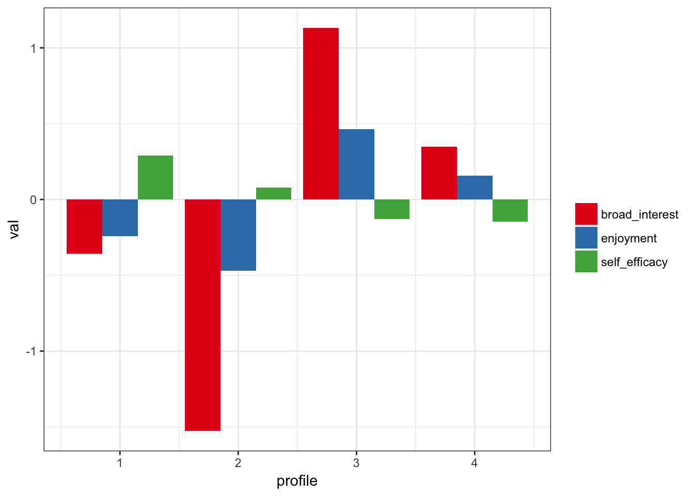
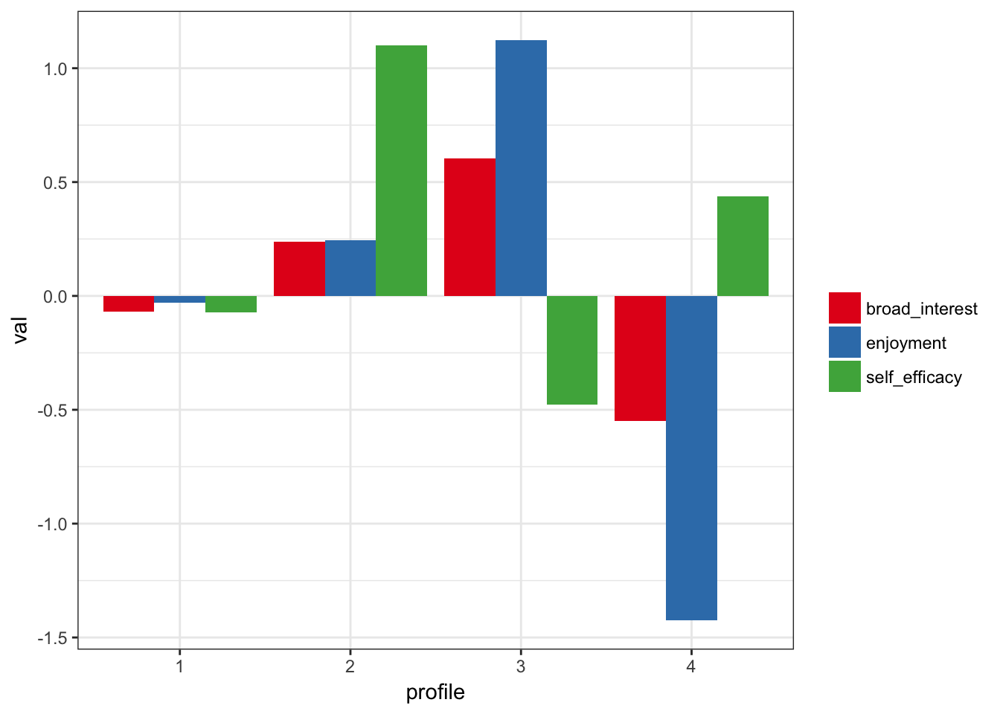
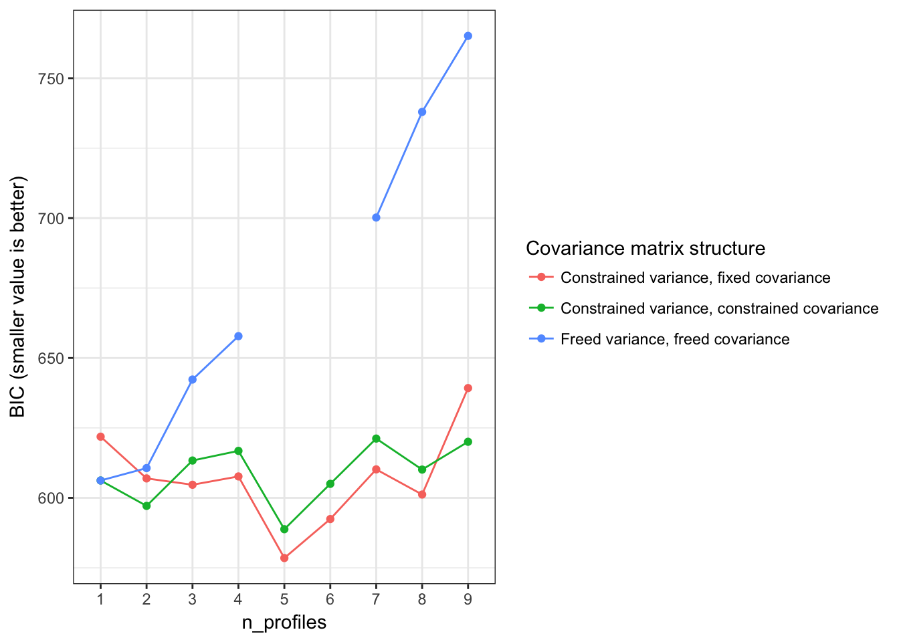
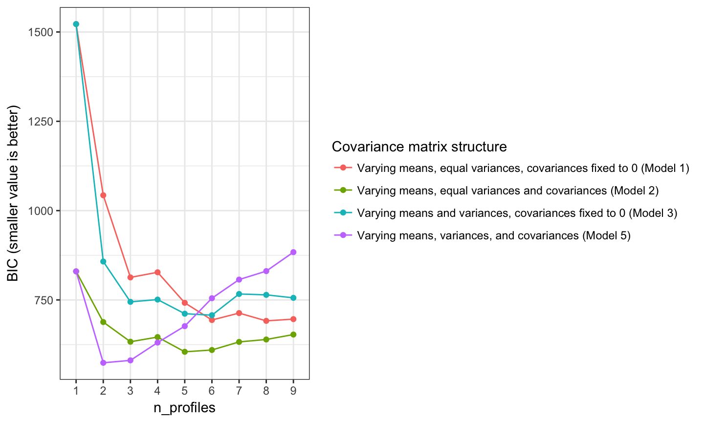
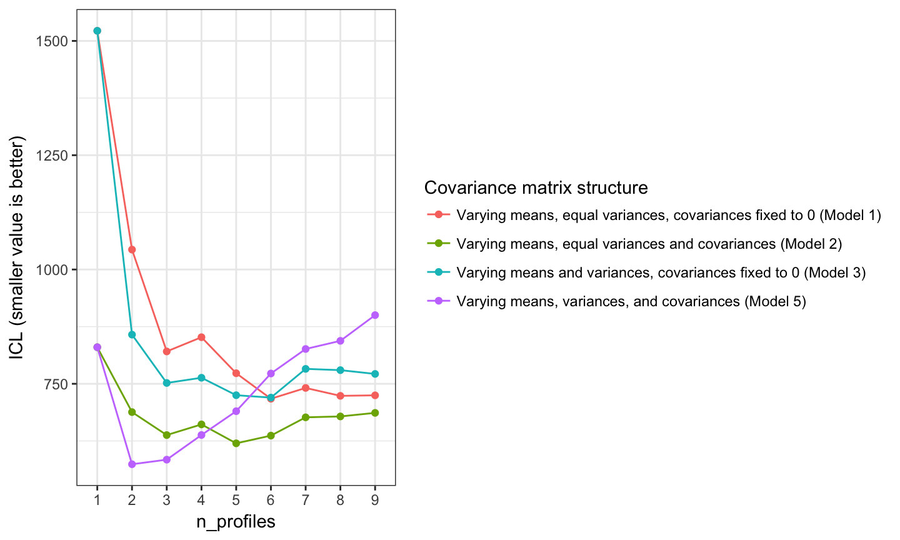

tidyLPA provides an interface to the powerful mclust package to easily carry out Latent Profile Analysis (LPA). Its main contribution is corresponding that are commonly specified when carrying out LPA. Its secondary contribution is to make it easier to use the output in subsequent analysis through a tidy user interface, in that output is in the form of a tibble (closely related to a data.frame) that can subsequently be computed on.
The goal of tidyLPA is to provide tools to make it easier to use the R package mclust for Latent Profile Analysis analyses.
tidyLPA has been benchmarked to MPlus, at least for a simple dataset (the iris dataset) and with three of the more common model specifications. You can find the results of that benchmarking, which showed the results to be nearly identical, here.
#> Loading tidyLPAHere is a very short example using the built-in dataset pisaUSA15.
First, install the package from GitHub:
install.packages("devtools")
devtools::install_github("jrosen48/tidyLPA")Here is the simple example, using just a subset of the built-in pisaUSA15 data, data from the 2015 PISA assessment (more details can be found here).
library(tidyLPA)library(dplyr, warn.conflicts = FALSE)
d <- pisaUSA15[1:100, ]
m3 <- create_profiles_lpa(d, broad_interest, enjoyment, self_efficacy, n_profiles = 3, model = 2)
#> Fit varying means, equal variances and covariances (Model 2) model with 3 profiles.
#> LogLik is 281.206
#> AIC is 596.412
#> CAIC is 656.648
#> BIC is 639.648
#> SABIC is 585.979
#> ICL is 669.316
#> Entropy is 0.865
plot_profiles_lpa(m3)
#> Warning: attributes are not identical across measure variables;
#> they will be dropped
#> Warning: Removed 9 rows containing missing values (geom_col).
#> Warning: Removed 18 rows containing missing values (geom_errorbar).
Here are more in-depth examples.
tidyLPA is presently designed to be used in two ways:
In a “data-first” (or tidy) way, akin to the interface popularized in the dplyr and tidyr (and other) packages - this approach is termed a “tidy” approach in large parts of the R users community
In a more conventional, object-oriented way - this approach will be familiar to those who have used functions such as the built-in lm() function for general linear models (i.e., regression and ANOVA)
This example makes use of the first, data-first, tidy approach, in which a data.frame (or a tibble to those who use packages such as dplyr and other “tidy” packages) is both input and output by the main function in this package.
Using the built-in pisaUSA15 dataset (using just 200 observations for illustrative purposes) and variables for broad interest, enjoyment, and self-efficacy, we can explore a three profile solution, with, for example, 4 profiles, and varying means across profiles, but equal variances and covariances (specified with model = 2, which happens to be the default model if none is specified). More information the models described later in this vignette. Note that the number of profiles are typically chosen on the basis of evidence from multiple sources, including information criteria, statistical tests, and concerns of interpretability and parsimony.
library(tidyLPA)
library(dplyr, warn.conflicts = FALSE)
d <- pisaUSA15
d <- sample_n(pisaUSA15, 500)
create_profiles_lpa(d, broad_interest, enjoyment, self_efficacy, n_profiles = 4, model = 2)
#> Fit varying means, equal variances and covariances (Model 2) model with 4 profiles.
#> LogLik is 1417.707
#> AIC is 2877.415
#> CAIC is 2985.711
#> BIC is 2964.711
#> SABIC is 2898.061
#> ICL is 3513.874
#> Entropy is 0.584
#> # A tibble: 472 x 5
#> broad_interest enjoyment self_efficacy profile posterior_prob
#> <dbl> <dbl> <dbl> <dbl> <dbl>
#> 1 3.6 3.0 2.375 3 0.49209
#> 2 3.0 4.0 2.000 3 0.71831
#> 3 1.6 3.0 2.000 1 0.70876
#> 4 2.6 2.0 2.875 1 0.56214
#> 5 3.4 4.0 4.000 3 0.87566
#> 6 2.4 1.8 1.000 2 0.93695
#> 7 2.4 2.2 2.875 1 0.61672
#> 8 2.4 3.0 2.875 1 0.55210
#> 9 2.8 3.4 1.500 3 0.38225
#> 10 3.2 3.0 2.750 3 0.41200
#> # ... with 462 more rows**Note that if you get the warning “Some profiles are associated with no assignments. Interpret this solution with caution and consider other models”, then this is a sign that a simpler model (with fewer profiles) likely fits better.
You can see the output is simply the same tibble that is input as the first function to create_profiles_LPA, but modified so that the classification and posterior probability of the classification are added (and incomplete cases with respect to the variables used to estimate the profiles removed).
We can then plot this output using the plot_profiles_lpa() function and the pipe (%>%) from the dplyr package:
create_profiles_lpa(d, broad_interest, enjoyment, self_efficacy, n_profiles = 4, model = 2) %>%
plot_profiles_lpa()
#> Fit varying means, equal variances and covariances (Model 2) model with 4 profiles.
#> LogLik is 1417.707
#> AIC is 2877.415
#> CAIC is 2985.711
#> BIC is 2964.711
#> SABIC is 2898.061
#> ICL is 3513.874
#> Entropy is 0.584
#> Warning: attributes are not identical across measure variables;
#> they will be dropped
#> Warning: Removed 12 rows containing missing values (geom_col).
#> Warning: Removed 24 rows containing missing values (geom_errorbar).
You can, if you like, use the arguments center_raw_data (to center all of the clustering variables to have a mean of 0) or scale_raw_data (to scale all of the clustering variables to have a standard deviation of 1) in create_profiles_lpa().
Below is identical to the two lines of code above, except that instead of using the pipe, we save the output the object m3, and then call the plot_profiles_lpa() function on the output that it points to.
m3 <- create_profiles_lpa(d, broad_interest, enjoyment, self_efficacy, n_profiles = 4, model = 2)
#> Fit varying means, equal variances and covariances (Model 2) model with 4 profiles.
#> LogLik is 1417.707
#> AIC is 2877.415
#> CAIC is 2985.711
#> BIC is 2964.711
#> SABIC is 2898.061
#> ICL is 3513.874
#> Entropy is 0.584
plot_profiles_lpa(m3, to_center = TRUE)
We can also return all of the data. This returns a tibble with all of the variables in the original data, in this case d, so that subsequent analyses using variables that are not used to create the profile can be easily carried out.
create_profiles_lpa(d, broad_interest, enjoyment, self_efficacy, n_profiles = 4, model = 2, return_orig_df = T)
#> Fit varying means, equal variances and covariances (Model 2) model with 4 profiles.
#> LogLik is 1417.707
#> AIC is 2877.415
#> CAIC is 2985.711
#> BIC is 2964.711
#> SABIC is 2898.061
#> ICL is 3513.874
#> Entropy is 0.584
#> # A tibble: 472 x 6
#> broad_interest enjoyment instrumental_mot self_efficacy profile
#> <dbl> <dbl> <dbl> <dbl> <dbl>
#> 1 3.6 3.0 2.00 2.375 3
#> 2 3.0 4.0 1.00 2.000 3
#> 3 1.6 3.0 2.00 2.000 1
#> 4 2.6 2.0 2.25 2.875 1
#> 5 3.4 4.0 1.00 4.000 3
#> 6 2.4 1.8 1.75 1.000 2
#> 7 2.4 2.2 2.00 2.875 1
#> 8 2.4 3.0 4.00 2.875 1
#> 9 2.8 3.4 1.00 1.500 3
#> 10 3.2 3.0 2.00 2.750 3
#> # ... with 462 more rows, and 1 more variables: posterior_prob <dbl>In addition to being used as part of a “tidy” approach, there is also an option to use it as part of a more conventional, object-oriented approach. In this example, instead of outputting a tibble, we will output an object of class Mclust.
d <- pisaUSA15
d <- sample_n(pisaUSA15, 500)
m3_mclust <- create_profiles_lpa(d, broad_interest, enjoyment, self_efficacy, n_profiles = 2, model = 2, to_return = "mclust")
#> Fit varying means, equal variances and covariances (Model 2) model with 2 profiles.
#> LogLik is 1408.09
#> AIC is 2842.18
#> CAIC is 2909.137
#> BIC is 2896.137
#> SABIC is 2854.878
#> ICL is 2960.507
#> Entropy is 0.941Any of the functions from the mclust package that work with this type of output will work on this output; the only difference is that the model is specified in this package (with the create_profiles_lpa() function) instead of the Mclust() function from the mclust package.
As mentioned earlier, there are a number of different models representing different covariance matrix parameterizations that can be fit using tidyLPA. These are passed to the model argument to the create_profiles_lpa() function, i.e. create_profiles_lpa(d, broad_interest, enjoyment, self_efficacy, n_profiles = 3, model = 2, to_return="tibble").
In general, the approach to choosing the model is similar to choosing the number of profiles, requiring deciding on the basis of evidence from multiple sources, including information criteria, statistical tests, and concerns of interpretability and parsimony.
Here is more information on their specification, drawing from Pastor’s (2007) article.
A few notes:
p represents different profiles (or mixture components).
each covariance parameterization is represented by a 4 x 4 covariance matrix and therefore would represent the parameterization for a four-profile solution.
A. Varying means, equal variances, covariances fixed to 0 (model 1)
corresponds to the mclust model “EEI”, “diagonal, equal volume and shape”
\[ \left[ \begin{matrix} { \sigma }_{ 1 }^{ 2 } & 0 & 0 & 0 \\ 0 & { \sigma }_{ 2 }^{ 2 } & 0 & 0 \\ 0 & 0 & { \sigma }_{ 3 }^{ 2 } & 0 \\ 0 & 0 & 0 & { \sigma }_{ 4 }^{ 2 } \end{matrix} \right] \]
B. Varying means, equal variances and covariances (model 2)
corresponds to the mclust model “EEE”, “ellipsoidal, equal volume, shape, and orientation”
\[ \left[ \begin{matrix} { \sigma }_{ 1 }^{ 2 } & { \sigma }_{ 21 } & { \sigma }_{ 31 } & { \sigma }_{ 41 } \\ { \sigma }_{ 12 } & { \sigma }_{ 2 }^{ 2 } & { \sigma }_{ 23 } & { \sigma }_{ 24 } \\ { \sigma }_{ 13 } & { \sigma }_{ 12 } & { \sigma }_{ 3 }^{ 2 } & { \sigma }_{ 33 } \\ { \sigma }_{ 14 } & { \sigma }_{ 12 } & { \sigma }_{ 12 } & { \sigma }_{ 4 }^{ 2 } \end{matrix} \right] \]
C. Varying means and variances, covariances fixed to 0 (model 3)
corresponds to the mclust model “VVI”, “diagonal, varying volume and shape”
\[ \left[ \begin{matrix} { \sigma }_{ 1p }^{ 2 } & 0 & 0 & 0 \\ 0 & { \sigma }_{ 2p }^{ 2 } & 0 & 0 \\ 0 & 0 & { \sigma }_{ 3p }^{ 2 } & 0 \\ 0 & 0 & 0 & { \sigma }_{ 4p }^{ 2 } \end{matrix} \right] \]
D. Varying means and variances, equal covariances (model 4)
While used in some applications of Latent Profile Analysis, this model cannot presently be specified in mclust
\[ \left[ \begin{matrix} { \sigma }_{ 1p }^{ 2 } & { \sigma }_{ 21 } & { \sigma }_{ 31 } & { \sigma }_{ 41 } \\ { \sigma }_{ 12 } & { \sigma }_{ 2p }^{ 2 } & { \sigma }_{ 23 } & { \sigma }_{ 24 } \\ { \sigma }_{ 13 } & { \sigma }_{ 12 } & { \sigma }_{ 3p }^{ 2 } & { \sigma }_{ 33 } \\ { \sigma }_{ 14 } & { \sigma }_{ 12 } & { \sigma }_{ 12 } & { \sigma }_{ 4p }^{ 2 } \end{matrix} \right] \]
E. Varying means, variances, and covariances
corresponds to the mclust model “VVV”, “ellipsoidal, varying volume, shape, and orientation”
\[ \left[ \begin{matrix} { \sigma }_{ 1p }^{ 2 } & { \sigma }_{ 21p } & { \sigma }_{ 31p } & { \sigma }_{ 41p } \\ { \sigma }_{ 12p } & { \sigma }_{ 2p }^{ 2 } & { \sigma }_{ 23p } & { \sigma }_{ 24p } \\ { \sigma }_{ 13p } & { \sigma }_{ 12p } & { \sigma }_{ 3p }^{ 2 } & { \sigma }_{ 33p } \\ { \sigma }_{ 14p } & { \sigma }_{ 12p } & { \sigma }_{ 12p } & { \sigma }_{ 4p }^{ 2 } \end{matrix} \right] \]
We can quickly explore a number of models - both in terms of the specification of the model and the number of profiles using the Bayesian Information Criteria (BIC) values or the Integrated Completed Likelihood (ICL). For illustration, the built-in (to R) iris dataset is used a number of the models using the PISA data do not reach convergence.
Note that although BIC and ICL statistics may appear for the combination of a particular model and number of profiles, the output for these models may have profiles with no observations assigned to them, and so these statistics and figures should be considered starting points, not the sole criterion on which to decide on which model to select.
compare_models_lpa(iris, Sepal.Length, Sepal.Width, Petal.Length, Petal.Width, statistic = "BIC")
compare_models_lpa(iris, Sepal.Length, Sepal.Width, Petal.Length, Petal.Width, statistic = "ICL")
To determine the number of profies for a specified model (i.e., models 1-4 described above, we can carry out a bootstrapped likelihood-ratio test. Note that the code is shown but run because it can take substantial time, even for a small dataset.
bootstrap_lrt(d, broad_interest, enjoyment, self_efficacy, model = 3)There is an in-development function to generate the model syntax (and prepare the data) and run the same models through the Mplus software:
m1 <- create_profiles_mplus(iris,
Sepal.Length, Sepal.Width, Petal.Length, Petal.Width,
n_profiles = 2,
model = 1)
#> Warning in as.POSIXlt.POSIXct(x, tz): unknown timezone 'zone/tz/2017c.1.0/
#> zoneinfo/America/Detroit'The object m1 contains the Mplus output, as is returned in Mplus, but in an R list; for quick comparisons, create_profiles_mplus() prints the log-likelihood, BIC, and entropy statistics.
This is a sister-project to prcr, for two-step cluster analysis.
Pastor (2007) provides an accessible introduction to LPA, with an applied example in educational research.
To contribute, file issues via GitHub here or get in touch via email or Twitter.